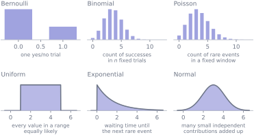
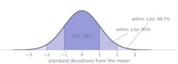
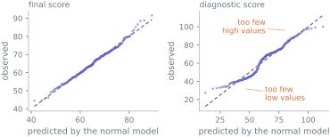

Distributions chosen by mechanism
Why this lesson is here
A histogram tells you about the data you have. A distribution is a model, and a model lets you compute probabilities of things you have not seen: how often five failures in a row would happen by chance, how far from the mean an observation has to be before it is surprising, what a 95% interval should be wide.
The trap is choosing the distribution by looking at the histogram. Almost every family in this lesson is the consequence of a mechanism — a story about how the numbers were generated — and the shape is what falls out of the story. Pick by the story and you can defend the choice and test it. Pick by the shape and you have drawn a curve that fits the data you happen to have.
Before you start
You should be able to:
- distinguish a probability mass function from a density — S5;
- compute an expected value and a variance — S5;
- read a histogram — S2.
Quick check. A random variable takes the value 1 with probability \(p\) and 0 otherwise. What are its mean and its variance?
TipShow the answer
\(E[X] = p\) and \(\operatorname{Var}(X) = p(1-p)\).
This is the Bernoulli distribution, and it is the atom the first half of this lesson is built from. Note that the variance is largest at \(p = 0.5\) and vanishes at \(p = 0\) or \(1\): a coin you cannot predict is the most variable one there is.
The idea
Six families cover most of what you will meet, and each of them answers a specific question about a specific kind of process.
Read the captions rather than the shapes. “Count of successes in \(n\) fixed trials” is a claim about your data-collection process that you can check. “Looks a bit like the second one” is not.
The mechanics
Bernoulli and Binomial
A Bernoulli variable is one trial with two outcomes: \(P(X=1) = p\), \(P(X=0) = 1-p\), mean \(p\), variance \(p(1-p)\).
Add \(n\) independent Bernoulli trials that all share the same \(p\) and you count successes. That is the Binomial:
\[ P(X = k) = \binom{n}{k} p^k (1-p)^{n-k}, \qquad k = 0, 1, \dots, n \]
where \(\binom{n}{k}\), read “\(n\) choose \(k\)”, is the number of ways to pick which \(k\) of the \(n\) trials succeed: \(n!/\bigl(k!\,(n-k)!\bigr)\), with the factorial \(k! = k \times (k-1) \times \dots \times 1\) and \(0! = 1\). Writing \(X \sim \text{Binomial}(n, p)\) means “\(X\) has this distribution”. It comes with \(E[X] = np\) and \(\operatorname{Var}(X) = np(1-p)\) — which follow from S5’s rules in one line each, since expectation and (under independence) variance both add.
The binomial makes two assumptions, and both fail in practice more often than people check. The trials must be independent: students in the same tutorial group, or repeat visits by the same customer, are not. The probability must be the same every trial: if \(p\) drifts — a machine wearing out, a policy changing midway — the count is no longer binomial.
It is worth being precise about which way each failure pushes the spread, because the obvious guess is wrong for one of them. Trials that stay independent but have different fixed probabilities \(p_1, \dots, p_n\) give a count with variance \(\sum p_i(1-p_i)\), which is smaller than \(n\bar{p}(1-\bar{p})\) — spread is greatest when every trial is equally uncertain. What produces overdispersion, the far more common complaint, is failure of the first assumption: trials that are positively related, so that they tend to succeed or fail together.
Poisson
Events happen at a constant average rate \(\lambda\) per window, independently of each other, and you count how many fall in one window. That is the Poisson:
\[ P(X = k) = \frac{e^{-\lambda}\lambda^k}{k!}, \qquad k = 0, 1, 2, \dots \]
with the striking property
\[ E[X] = \operatorname{Var}(X) = \lambda . \]
That equality is a testable prediction, and it is the first thing to check when someone proposes a Poisson model. Real count data — accidents, faults, support tickets — is usually overdispersed, with variance well above the mean, because the events cluster or the rate is not constant. If your counts have mean 4 and variance 15, the Poisson is already refuted, and no amount of curve-fitting repairs that.
Uniform
Every value in \([a, b]\) is equally likely: \(f(x) = 1/(b-a)\) on that interval and zero outside it. Mean \((a+b)/2\), variance \((b-a)^2/12\). It is the distribution of “I know the range and nothing else”, and it is rarer in real data than beginners expect — genuine measurements almost always have a middle they prefer.
Exponential
The waiting time until the next event, when events arrive as a Poisson process at rate \(\lambda\):
\[ f(x) = \lambda e^{-\lambda x} \; (x \ge 0), \qquad E[X] = \frac{1}{\lambda}, \qquad \operatorname{Var}(X) = \frac{1}{\lambda^2} . \]
Its defining property is memorylessness: having waited ten minutes already tells you nothing about how much longer you will wait. That is a very strong assumption. It is roughly true of radioactive decay and roughly false of almost everything involving wear, queues or human behaviour — a machine that has run for ten years is not as good as new.
Normal
The normal distribution arises when many small independent contributions add up, which is why it is everywhere: heights, measurement errors, exam marks built from many questions.
\[ f(x) = \frac{1}{\sigma\sqrt{2\pi}}\, e^{-(x-\mu)^2 / (2\sigma^2)} \]
It is symmetric about \(\mu\), and the famous fractions follow:
| within | of the mean | contains about |
|---|---|---|
| \(\mu \pm 1\sigma\) | one standard deviation | 68% |
| \(\mu \pm 2\sigma\) | two standard deviations | 95% |
| \(\mu \pm 3\sigma\) | three standard deviations | 99.7% |

Two warnings that matter more than the formula. First, the normal density has no elementary antiderivative — the areas above cannot be worked out with the techniques of M7, which is why every statistics book once carried a table and every library now carries norm.cdf. Second, the normal has thin tails, so when the real distribution has heavier ones it badly underestimates how often extreme events happen. Financial returns are the standard cautionary tale. The error can run the other way — the cohort’s diagnostic score, below, has lighter tails than a normal, so a normal model would over-predict its extremes — and the general point is that a fit judged in the middle tells you very little about either tail.
Choosing, then checking
The procedure is always the same. Ask what generated the data, pick the family whose mechanism matches, then check the fit against a prediction the family makes — the mean-equals-variance property for a Poisson, the 68–95–99.7 fractions for a normal, a quantile-quantile plot for anything continuous.
A Q-Q plot sorts your data and plots each value against the value the model says should sit at that position. If the model is right the points fall on a straight line; the ways they leave it tell you how it is wrong.
Worked example
Two questions about the cohort, two different families.
import numpy as np
import pandas as pd
from scipy import stats
cohort = pd.read_csv("data/cohort.csv")
scored = cohort[cohort["final_score"].between(0, 100)]
scores = scored["final_score"].to_numpy()
diagnostic = scored["diagnostic_score"].to_numpy()Question one: of 20 students picked at random, how many score 70 or more?
The mechanism is right there: 20 independent draws, each either a success or not, with the same probability each time. That is a binomial, and the only thing to supply is \(p\).
p = (scores >= 70).mean()
n = 20
print(f"p = {(scores >= 70).sum()}/{scores.size} = {p:.4f}")
print(f"Binomial(20, {p:.3f}): mean {n*p:.2f} variance {n*p*(1-p):.2f}"
f" sd {np.sqrt(n*p*(1-p)):.2f}")
print()
for k in [2, 4, 6, 8, 10]:
print(f" P(exactly {k:>2}) = {stats.binom.pmf(k, n, p):.4f}"
f" P(at most {k:>2}) = {stats.binom.cdf(k, n, p):.4f}")p = 69/238 = 0.2899
Binomial(20, 0.290): mean 5.80 variance 4.12 sd 2.03
P(exactly 2) = 0.0336 P(at most 2) = 0.0434
P(exactly 4) = 0.1430 P(at most 4) = 0.2688
P(exactly 6) = 0.1907 P(at most 6) = 0.6463
P(exactly 8) = 0.1033 P(at most 8) = 0.9054
P(exactly 10) = 0.0253 P(at most 10) = 0.9869So about six of twenty, and getting ten or more would be unusual but not extraordinary — \(1 - F(9) = 3.8\%\) of the time. Notice that this is a claim about groups of twenty we never observed, produced entirely by the model.
The independence assumption deserves a moment. Twenty students drawn at random from a large population are effectively independent. Twenty students from the same tutorial group are not, and the binomial would understate the spread.
Question two: is the final score normal?
Here there is a mechanism to appeal to — a final score is built from many questions, each contributing a little — so the normal is a reasonable prior guess. Now check it, and check a variable where the same guess fails.
for name, values in [("final score", scores), ("diagnostic score", diagnostic)]:
m, s = values.mean(), values.std(ddof=1)
inside = [((values > m - k*s) & (values < m + k*s)).mean() for k in (1, 2, 3)]
print(f"{name:<18} within 1sd {inside[0]:.3f} 2sd {inside[1]:.3f} "
f"3sd {inside[2]:.3f}")
print(f"{'normal model says':<18} within 1sd 0.683 2sd 0.954 3sd 0.997")final score within 1sd 0.710 2sd 0.954 3sd 0.996
diagnostic score within 1sd 0.601 2sd 0.979 3sd 1.000
normal model says within 1sd 0.683 2sd 0.954 3sd 0.997The final score is close on all three. The diagnostic score is not: only 60% of it lies within one standard deviation of the mean, against the 68% a normal predicts, and too much sits in the second band. That is the signature of a distribution that is flatter than a normal — which it should be, because S2 showed the cohort is five background groups with well-separated centres, and the diagnostic separates them most sharply of all.

The honest conclusion is the one to practise writing: a normal model is adequate for the final score for the purposes of the intervals in S8, and not adequate for the diagnostic score, which is a mixture and should be handled by group. Neither variable “is normal” — that is not a property data has. A model is adequate or not, for a stated purpose.
Try it yourself
Exercise 1 For each of these, name the distribution you would try first and say what mechanism justifies it.
- The number of heads in 50 tosses of a fair coin.
- The number of emails arriving at a server between 09:00 and 09:01.
- The time until a randomly chosen radioactive atom decays.
- The height of a randomly chosen adult.
- The number of students in a tutorial group of 12 who complete the course, where the tutor’s teaching affects everyone in the group.
TipShow the solution
Binomial(50, 0.5) — a fixed number of independent trials with a constant success probability. Every assumption holds exactly, which is rare.
Poisson — a count of events in a fixed window at an approximately constant rate. Check the mean against the variance before trusting it: email arrives in bursts, and bursts produce overdispersion.
Exponential — the waiting time for a memoryless process. Radioactive decay is the one textbook example where memorylessness is genuinely true.
Normal — many small independent genetic and environmental contributions adding up. Note that adult height in a mixed-sex population is a mixture of two normals, and looks flatter than either, exactly like the diagnostic score in the worked example.
Not binomial, and this is the interesting one. The trials are not independent: a good or bad tutor moves every student in the group the same way. The count still has a mean of \(12p\), but its variance exceeds \(12p(1-p)\), so binomial intervals around it would be too narrow.
Exercise 2 A support desk records the number of tickets per hour over 200 hours. The mean is 4.1 and the variance is 14.8.
- Is a Poisson model tenable?
- Suggest two mechanisms that could produce this pattern.
- What goes wrong if you use the Poisson anyway?
TipShow the solution
No. A Poisson predicts mean \(=\) variance. Here the variance is more than three times the mean, which is the standard diagnosis of overdispersion.
Either the rate is not constant — busier at 10am than at 4pm, busier on Mondays, a spike when a release goes out — or the events are not independent, because one outage generates fifty tickets at once. Both produce the same symptom, and distinguishing them needs more than the two summary numbers.
Everything derived from the model understates the spread. A Poisson would put the standard deviation at \(\sqrt{4.1} = 2.0\) when it is really \(\sqrt{14.8} = 3.8\), so alert thresholds fire constantly, capacity plans are built on a quiet hour that does not exist, and any interval you quote is roughly half as wide as it should be.
Exercise 3 Exam marks have mean 65 and standard deviation 8, and a normal model is adequate.
- Roughly what fraction of students score above 81?
- A student scores 41. How unusual is that, and what would you check before saying so out loud?
TipShow the solution
\(81 = 65 + 2 \times 8\), so this is two standard deviations above the mean. About 95% lies within two standard deviations, leaving 5% outside, split evenly between the two tails: roughly 2.5%.
\(41 = 65 - 3 \times 8\), three standard deviations below. Under a normal model about 0.3% lies outside three standard deviations, so about 0.15% below — roughly 1 student in 700.
What to check first: whether the normal model is adequate in the tail. The 68–95–99.7 fractions are dominated by the middle of the distribution, and a model can match them well while getting the tails badly wrong — which is exactly where this question lives. With 240 students you have almost no information about a 1-in-700 event, so the honest answer is “unusual under this model, and this model is not well tested that far out”.
Check it in Python
The distributions in this lesson make predictions, and every prediction here is one simulation away from being checked.
rng = np.random.default_rng(2026)
simulated = rng.binomial(n=20, p=p, size=200_000)
print(f"simulated mean {simulated.mean():.4f} formula np {n*p:.4f}")
print(f"simulated var {simulated.var():.4f} formula np(1-p) {n*p*(1-p):.4f}")simulated mean 5.7879 formula np 5.7983
simulated var 4.1227 formula np(1-p) 4.1173The Poisson’s mean-equals-variance property, and then the same statistic on data that is not Poisson:
poisson_counts = rng.poisson(lam=4.0, size=200_000)
print(f"true Poisson: mean {poisson_counts.mean():.3f} "
f"variance {poisson_counts.var():.3f} ratio {poisson_counts.var()/poisson_counts.mean():.3f}")
# A rate that changes hour to hour: still counts, no longer Poisson.
rates = rng.uniform(1.0, 7.0, size=200_000)
mixed_counts = rng.poisson(lam=rates)
print(f"drifting rate: mean {mixed_counts.mean():.3f} "
f"variance {mixed_counts.var():.3f} ratio {mixed_counts.var()/mixed_counts.mean():.3f}")true Poisson: mean 4.002 variance 4.006 ratio 1.001
drifting rate: mean 4.005 variance 7.007 ratio 1.750Both sets of counts have almost the same mean. Only the variance gives the second one away, which is why the ratio is the diagnostic worth computing every time.
Now the check that fails. It is tempting to treat “roughly bell-shaped” as “normal enough”, so assert the 68% rule on the diagnostic score and watch:
m, s = diagnostic.mean(), diagnostic.std(ddof=1)
within_one = ((diagnostic > m - s) & (diagnostic < m + s)).mean()
assert abs(within_one - 0.683) < 0.02, (
f"a normal model predicts 68.3% within one sd; the diagnostic score has "
f"{100*within_one:.1f}%"
)--------------------------------------------------------------------------- AssertionError Traceback (most recent call last) Cell In[9], line 3 1 m, s = diagnostic.mean(), diagnostic.std(ddof=1) 2 within_one = ((diagnostic > m - s) & (diagnostic < m + s)).mean() ----> 3 assert abs(within_one - 0.683) < 0.02, ( 4 f"a normal model predicts 68.3% within one sd; the diagnostic score has " 5 f"{100*within_one:.1f}%" 6 ) AssertionError: a normal model predicts 68.3% within one sd; the diagnostic score has 60.1%
Eight percentage points is a large miss, and it is in the direction that says “flatter than normal”. Run the same check on the final score, with the tolerance loosened, and it passes:
m, s = scores.mean(), scores.std(ddof=1)
within_one = ((scores > m - s) & (scores < m + s)).mean()
print(f"final score: {100*within_one:.1f}% within one sd — "
f"normal predicts 68.3%")
assert abs(within_one - 0.683) < 0.05final score: 71.0% within one sd — normal predicts 68.3%Note the tolerance had to be loosened to 5 percentage points for even the good case to pass. This is a coarse check, not a test, and S9 gives you the machinery to say how coarse.
Common wrong turns
Where this usually goes wrong
- Choosing a distribution because the histogram looks like it
- With 30 observations almost any smooth family can be made to look plausible. Start from the mechanism — fixed trials, arrivals in a window, waiting times, many small additive effects — and use the histogram to check, not to choose.
- Using a binomial when the trials are related
- Students in a class, measurements from one instrument, days in one week. The mean is still \(np\), but the variance is not \(np(1-p)\): positive dependence, the usual kind, inflates it, so everything built on the formula is too confident. (Negative dependence deflates it instead — drawing without replacement from a small pool is the standard example — which is safer but equally wrong.)
- Using a Poisson without checking mean against variance
- It is one line of code. Even true Poisson counts give a sample mean and variance that differ a little; a variance several times the mean refutes the model. Real counts are overdispersed far more often than not.
- Assuming an exponential waiting time for something that wears out
- Memorylessness says a machine that has run ten years is as good as new. For radioactive decay that is true; for machinery, queues and people it is usually false and always worth stating explicitly.
- Saying “the data are normally distributed”
- Data are not distributed; they are data. A model is adequate for a purpose. Say “a normal model fits well enough for this interval”, and name the check that persuaded you.
- Trusting a normal model in the tails
- The 68–95–99.7 fractions are dominated by the middle. A model can match them and still be wrong by orders of magnitude about a 4-sigma event, and 4-sigma events are usually the ones that matter.
- Expecting the central limit theorem to normalise your data
- It does no such thing. It says something about the distribution of the sample mean — S7 — and leaves the individual observations exactly as skewed as they were.
Check yourself
Answers are at the foot of the page. Give a reason as well as an answer.
A count variable has mean 6 and variance 6.1. Which family is worth trying?
- Binomial
- Poisson
- Normal
- Exponential
A binomial’s variance, \(np(1-p)\), is always below its mean \(np\). Here they are almost equal.
The variable is a count of whole numbers. Look for a family made for counts.
The exponential describes a continuous quantity such as a waiting time, and its variance is the square of its mean.
- \(X \sim \text{Binomial}(100, 0.2)\). What are \(E[X]\) and \(\text{sd}(X)\)?
- A variable is a mixture of two well-separated normal distributions in roughly equal proportions. Why does it fail the 68% check in the direction it does, and why does the “roughly equal” matter?
- A colleague fits a normal model, finds it matches the 68–95–99.7 fractions well, and concludes the chance of an observation 5 standard deviations out is about 1 in 3.5 million. What is wrong with this?
- True or false: if the individual observations are skewed, no normal-based method can be used.
TipShow the answers
(b), Poisson. Mean and variance being nearly equal is the Poisson’s signature. (a) is possible but a binomial has variance \(np(1-p)\), which is below its mean \(np\) for every \(p\) strictly between 0 and 1; (c) and (d) are for continuous variables, and an exponential would have variance \(36\), not 6.
\(E[X] = np = 20\) and \(\operatorname{Var}(X) = np(1-p) = 100 \times 0.2 \times 0.8 = 16\), so \(\text{sd}(X) = 4\). The commonest error is stopping at the variance and reporting 16.
Because a balanced mixture is flatter than a single normal with the same standard deviation. The overall standard deviation is inflated by the distance between the two centres, so the band \(\mu \pm 1\sigma\) is wide, but the data are piled at the two centres rather than in the middle — leaving fewer than 68% inside. The cohort’s diagnostic score shows exactly this at 60%.
The proportions matter because a lopsided mixture behaves in the opposite way. Put 99% of the weight at 0 and 1% at 100: the standard deviation is about 10, and roughly 99% of the values sit within one standard deviation of the mean. That is not a flat distribution at all — it is a tight one with a very heavy tail, and it fails the check in the other direction.
The fit was checked where the data are and the conclusion is drawn where they are not. Matching the central fractions says almost nothing about the tail beyond three standard deviations, and the number quoted — 1 in 3.5 million — is a property of the normal density, not of the data. Any dataset small enough to fit on a screen contains no evidence at all about 5-sigma events.
False, and this is the most useful thing in S7. Skewed observations can still give a sample mean whose distribution is close to normal, provided \(n\) is large enough — which is what S7 is about. What you must not do is apply a normal model to the individual values.